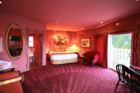

Room and Suite Offerings
Mercury Suite
The Mercury Suite is one of our smaller rooms we have here. It is still beautiful and comes with its own viewing deck, which allows you to gaze at nearby stars and planets. It comes with a queen sized bed and a big bathroom. To make visitors feel at home we also turned up the heat in this room, as it is the closest planet to our sun.
- Viewing Deck
- Mercury-Themed Food and Drinks
- Full Kitchen
Venus Suite
The Venus Suite is one of our most interesting rooms we have here at the Space Hotel. As you enter the room time slows down durastically. As one day on Venus is longer than a year on Earth! The heat will also be turned up in this room becuase of Venus being the hottest planet in our solar System. It comes with a King sized bed with a full bathroom and kitchen. A built in sauna is also available to residents of this room.
- Sauna
- Complementary Time Slowage
- Hottest Room at our Hotel
Mars Room
The Mars room is a beuatiful mid-sized room decorated in actual red soil from Mars itself. It comes with all of the basic ammenities you need as well as a hot tub. It is equipped with a queen sized bed and full bathroom. It also has a medium size multi-purpose room for any activities you may want to do. This is where most of our human guests will stay as it resembles closely to Earth in alot of ways.
- Hot Tub
- Full Kitchen
- Multi-purpose Room
Jupiter Room
The Jupiter Room is the biggest room we have available at The Space Hotel. It has its own full Viewing Room, similar to the Mecury Room, but this viewing Room gives you a great view of Jupiter's "Great Red Spot". It also has its own swimming pool filled with gases found on Jupiter! It comes with two king sized beds with their own rooms. A full Kitchen and two full bathrooms.
- Viewing Room of the Great Red Spot
- Two King Sized Beds
- A Special Jupiter-friendly Swimming Pool
Saturn Suite
The Saturn Suite is very interesting as it doesnt have any solid surface, similar to the planet itself. It is one of our biggers rooms with alot of cool ammenties. It comes with a queen sized bed made of different gases found on Saturn. It comes with a room that includes replicas of Saturn's 82 moons! It comes with its own Viewing Room as well. Saturn is the solar system's least dense planet and we tried to recreate that here at our hotel.
- Replica Room
- Specialized Non-solid Beds
- Viewing Room
Neptune Room
The Neptune Room at The Space Hotel is one of our personal favorites. You are greeted with a dark blue themed room filled with cool decorations. We have an active observatory of the current climate on Neptune. Neptune has a very active climate, with some storms lasting about five years. The room is filled with hydrogen, helium and methane, all found in Neptune's atmosphere. It comes with its own movie room and viweing deck. Watching movies surrounded by the lovely blue of Neptune really is an experience.
- Movie Room
- Viewing Deck
- Neptune Climate Observatory
Uranus Suite
The Uranus Suite is a beautiful mid-sized room with a cool blue themed interior. Our Uranus Suite is also the coldest room we have available here as Uranus is one of the coldest planets in our solar system. It comes with a king sized bed and full bathroom. It has its own room dedicated to the atmosphere of Uranus, it is a room full of ice, which can be found on the planet. The Room also comes with pictures of the 27 moons of Uranus engraved in the ceiling.
- Ice Room
- Uranus Moon decoration
- Special air-conditioning to uphold the cold temperatures of Uranus